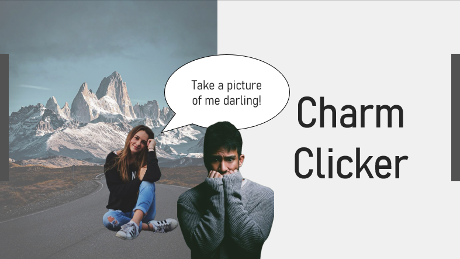
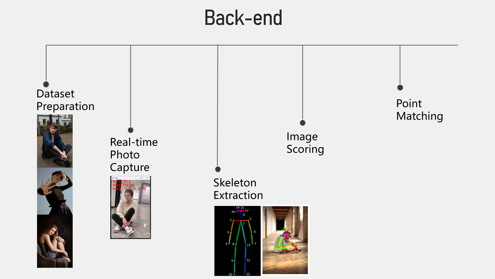
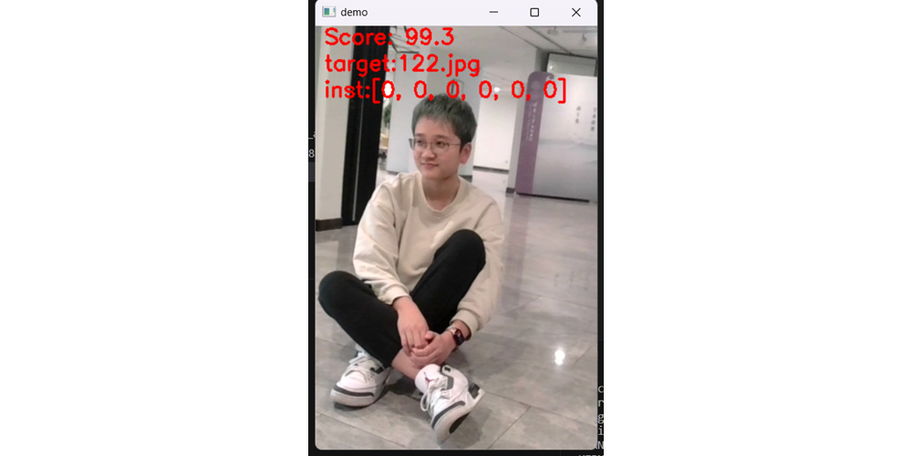

Project Introduction

This project requires students to use AI technology to fulfill specific market needs. After conducting research, my team and I found that the market is saturated with photo editing tools, but there is a lack of programs to assist in taking photos. Therefore, we designed Charm Clicker to guide individuals, especially those who struggle to take good photos of their girlfriends, in capturing well-proportioned portrait photos. We implemented clear and concise instructions in six directions (up, down, left, right, forward, backward) to provide effective guidance for capturing high-quality photos.
Technical Implementation
Firstly, we employed web scraping to find high-quality portrait photos online, compressed the pixels, and saved them to a database. Then, we used pre-trained open-source models to capture the positions of various joints in real-time. Using Manhattan distance, we searched the image database for the most similar photo as a template and provided instructions for aligning the subject’s chest with the chest of the person in the template photo. To address the issue of forward or backward instructions, we compared the neck lengths between the current scene and the template to determine the front-back relationship. Ultimately, with a sufficiently large database, the program can effectively perform the intended assistance.

The most critical issue in technical implementation was achieving real-time feedback. To address latency, we initially processed all images in the database with pixel compression to reduce loading time. We also compressed the pixels of each frame obtained from the camera to reduce the time needed for joint retrieval. Additionally, we pre-recorded the joint coordinates of all images in the image library in a CSV file to avoid unnecessary calculations. Through a series of measures to reduce computations, our final product experienced minimal lag.

Design Outcome
Our design primarily focused on simplifying the interaction process. We aimed for users to achieve the desired functionality with minimal steps. In our design, users only need to open the camera, point it at the subject for three seconds, and the program will automatically select a template image from the database. If users want to change the template, they simply need to tilt the camera down, removing the subject from the frame, to reset the program. Once the template is locked, the program provides real-time feedback on guidance in six directions and displays the current score. The closer the user’s photo is to the template image, the higher the score. Our program does not include unnecessary buttons, making it easy for users to understand and use this photography assistance program.
About this Post
This post is written by Jason, licensed under undefined.